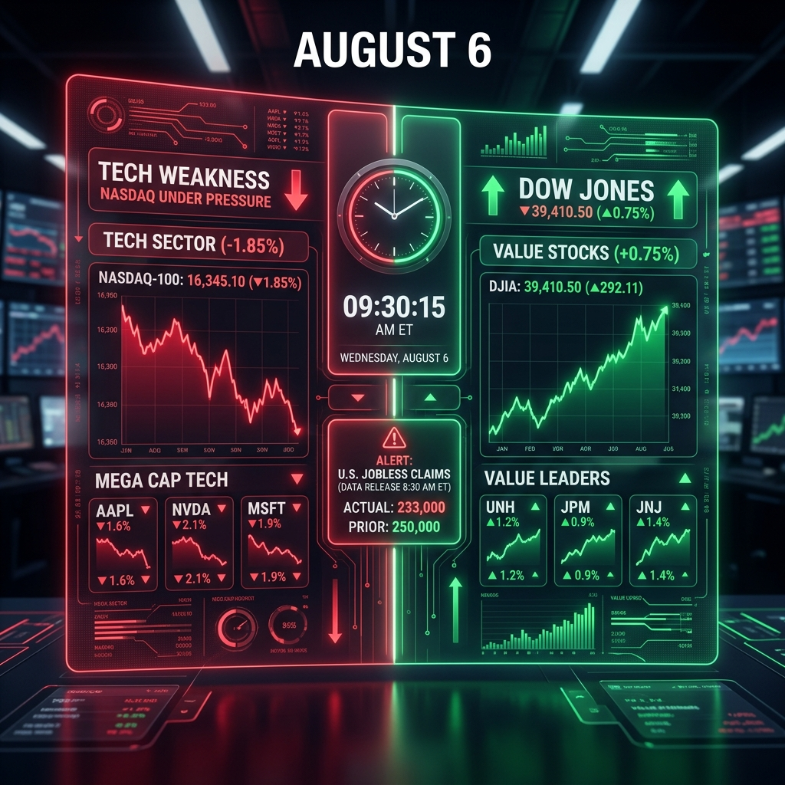

NY時間に向けて、米国市場ではハイテク株とバリュー株の明確な「二極化」が進行しています。ナスダック先物が売り優勢で重い展開となる一方、ダウ先物はプラス圏を維持し底堅さを発揮しています。
今夜発表される「新規失業保険申請件数」の結果次第では、労働市場の動向からFRBの利下げペースがさらに意識され、ドル円や株式相場に大きなボラティリティが生じる可能性があります。
「ハイテク株からバリュー株への資金シフト」と「新規失業保険申請件数への警戒」。
欧州市場がオープンすると、原油価格が上昇（76ドル台に回復）し、欧州株（STOXX50、DAXなど）は堅調に推移しています。一方、米国の株価指数先物はナスダック（-0.64%）の弱さが目立っており、ハイテク・半導体関連からの資金流出が継続している様子が伺えます。為替相場ではドル円が157.80円台で高止まりしており、底堅い展開が続いています。
| 指数・銘柄 | 現在値 | 前回比（前日比） | 騰落率 | 確認事項 |
|---|---|---|---|---|
| S&P 500 (ES=F) | 7,755.25 | +5.75 | +0.07% | 方向感なし |
| Nasdaq (NQ=F) | 29,424.50 | -190.50 | -0.64% | ハイテク売り継続 |
| Dow (YM=F) | 54,582.0 | +88.0 | +0.16% | バリュー株堅調 |
| 日経225現物 | 65,683.26 | -617.18 | -0.93% | 【大引け後】 |
| CME日経225先物 | 65,300.0 | -440.0 | -0.67% | ナスダック安に連れ安 |
| USD/JPY | 157.840 | +0.164 | +0.10% | 高値圏で揉み合い |
| EUR/USD | 1.1546 | -0.0009 | -0.08% | 横ばい |
| 金 | 4,317.5 | +12.3 | +0.29% | 【高止まり】4300ドル台維持 |
| 原油 | 76.07 | +0.85 | +1.13% | 反発強まる |
| BTCUSD | 64,387.72 | -214.60 | -0.33% | 64000ドル台で保ち合い |